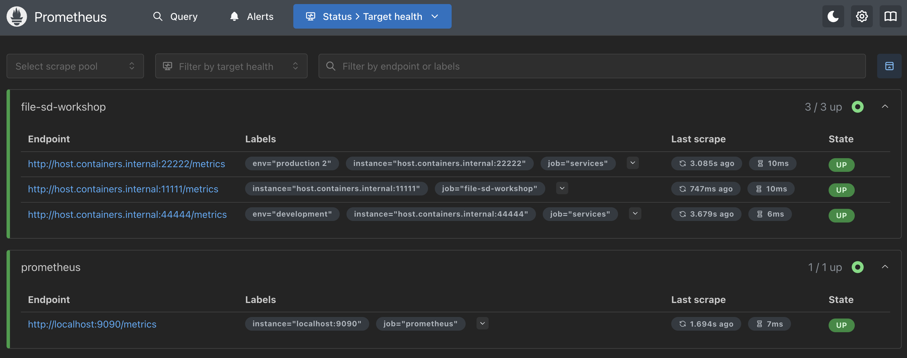
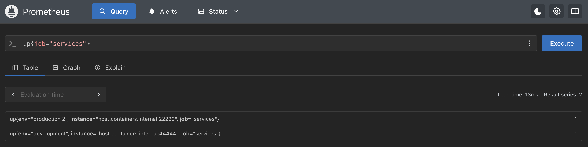
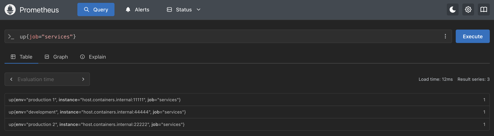
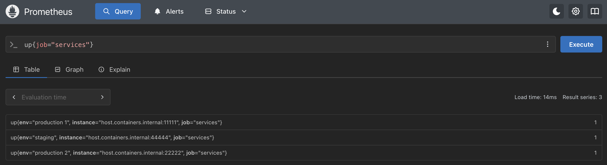
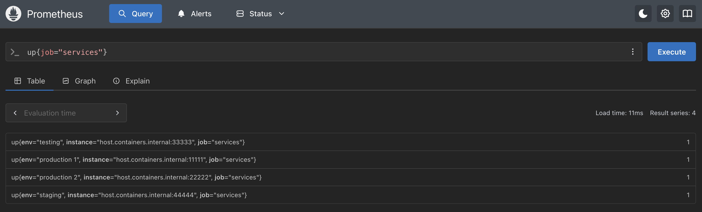

Service discovery - Setting up the targets
Our service discovery integration using file based discovery will need a file to watch, which
will be a
targets.yml file that needs to be located in the same Prometheus
instance directory holding your workshop-prometheus.yml file. Edit this
target file to look like this (note for container installs we are using a podman variable, if
using source install then replace all configuration targets with
localhost:PORT_NUMBER). For the Kubernetes path see the next slide. The
screenshots later in this lab were captured on the container path, so on the source and
Kubernetes paths the target addresses you see will read differently:
- targets: ["host.containers.internal:11111"]
- targets: ["host.containers.internal:22222"]
labels:
job: "services"
env: "production 2"
- targets: ["host.containers.internal:44444"]
labels:
job: "services"
env: "development"
Service discovery - Setting up the targets on Kubernetes
On Kubernetes, Prometheus reads its targets file from inside the pod, not from your local
machine, so this
targets.yml is a plain local file for now, using the
Service DNS names from the previous lab. You'll load it into the cluster on the next slide:
- targets: ["services-demo-prod1:8080"]
- targets: ["services-demo-prod2:8080"]
labels:
job: "services"
env: "production 2"
- targets: ["services-demo-dev:8080"]
labels:
job: "services"
env: "development"
Intermezzo - A word about Prometheus setup
The next step is configuring a Prometheus instance to make use of the file based discovery
targeting our newly created
Now let's get to work on that configuration...
targets.yml file. If you have been following the
previous workshop labs, you most likely have a heavily configured
workshop-prometheus.yml file (on Kubernetes, this is your
workshop-values.yaml file instead). In the next slide you'll see the minimum
setup you'll use for the rest of this lab. To achieve the same configuration, it's handy if you
just comment out any unused or unneeded parts of the configuration by commenting out lines using
# (hash mark or pound sign).Now let's get to work on that configuration...
Service discovery - Configuring file base discovery
Now we need to adjust the configuration of our Prometheus instance to use file based discovery
and watch the newly created
targets.yml file. To do that ensure the
workshop-prometheus.yml file contains the following (note the different
files location based on container image or source binary usage,
Kubernetes path see the next slide instead):
# workshop config
global:
scrape_interval: 5s
scrape_configs:
# Scraping Prometheus.
- job_name: "prometheus"
static_configs:
- targets: ["localhost:9090"]
# File based discovery.
- job_name: "file-sd-workshop"
file_sd_configs:
- files:
- "/tmp/targets.yml" <<<< if using src binary, replace with: "- targets.yml"
Service discovery - Mounting targets.yml on Kubernetes
On Kubernetes there's no local file for Prometheus to watch, so we mount your
targets.yml into the pod as a ConfigMap. Load it in first, so the mount
has something to attach to when you deploy:
$ kubectl create configmap prometheus-targets --from-file=targets.yml -n prometheus
Now add the mount to your
workshop-values.yaml file, under the
server block you already have:
server:
... <<<< LEAVE WHAT IS ALREADY THERE
extraConfigmapMounts:
- name: prometheus-targets
mountPath: /etc/targets
configMap: prometheus-targets
readOnly: true
Do not nest this under
/etc/config (the chart already mounts its own
ConfigMap there) and do not add a subPath. Mount the whole directory as
shown. A subPath mount only reads the file once at pod start and never updates,
silently defeating the entire point of file based discovery on this path.
Service discovery - Configuring file based discovery on Kubernetes
With the file mounted, add the matching
file_sd_configs job to the
scrapeConfigs block in the same file, pointing at the mounted path:
scrapeConfigs:
... <<<< LEAVE WHAT IS ALREADY THERE
file-sd-workshop:
job_name: file-sd-workshop
file_sd_configs:
- files:
- /etc/targets/targets.yml
Service discovery - Retiring the old services job on Kubernetes
Same as the source and container paths, comment out the old
services
job from lab 3 in the same scrapeConfigs block. Its targets
(services-demo, services-demo-2) don't exist on
this path unless you separately deployed them, and Prometheus reports them down otherwise:
# # Scraping services demo.
# services:
# job_name: services
# static_configs:
# - targets:
# - services-demo:8080
# - services-demo-2:8080
We will re-run the
helm upgrade to apply soon, so stand-by.
Service discovery - Adding targets to Buildfile (container)
Before you rebuild the container image, noting that we don't have to add the newly created
targets.yml file to the Buildfile. This file is hosted externally to the
static configuration so we can dynamically update it. Rebuild the container image using the
following Buildfile:
FROM prom/prometheus:v3.13.1
ADD workshop-prometheus.yml /etc/prometheus
Service discovery - Building a container image (container)
Now you can build your own container image with our custom configuration inserted:
$ podman build -t workshop-prometheus:v3.13 -f Buildfile
STEP 1/2: FROM prom/prometheus:v3.13.1
Resolving "prom/prometheus" using unqualified-search registries
Trying to pull docker.io/prom/prometheus:v3.13.1...
Getting image source signatures
Copying blob sha256:bd0d00e6784783d31bbe04e7b3bf2f54478ed0c46afc05a63e4a0f1f72076f03
Copying blob sha256:d2f8aae8d80e67a268ee5a3a7c47544bf2cdd7f9c177bd3e9a3d0b2cc100f00b
Copying blob sha256:fcd10bff2ba698a61831db119b3e42b946a2007e735a1c2368233950ac183c44
Copying config sha256:57847a717fc6727452cd1ed5b02200e3030aba04ca13cbdc536ee99402643440
Writing manifest to image destination
STEP 2/2: ADD workshop-prometheus.yml /etc/prometheus
--> Using cache a5e118ee2fb880b55d6b189dc6189837dd0ba73bb0f97e3b67a22eb672d1b776
COMMIT workshop-prometheus:v3.13
--> a5e118ee2fb8
Successfully tagged localhost/workshop-prometheus:v3.13
a5e118ee2fb880b55d6b189dc6189837dd0ba73bb0f97e3b67a22eb672d1b776
Service discovery - Starting Prometheus instance
How we start Prometheus is depending on whether we've chosen to install from the source binary,
run it in an open source container, or deployed it on Kubernetes. Start Prometheus using a
command below that matches our choice:
# Start Prometheus using source.
#
$ ./prometheus --config.file=workshop-prometheus.yml
# Start Prometheus in a container, mounting current directory to the container /tmp directory.
#
$ podman run -p 9090:9090 -v ./:/tmp workshop-prometheus:v3.13 --config.file=/etc/prometheus/workshop-prometheus.yml
# Start Prometheus on Kubernetes (k3s), applying the mount and job you just added.
#
$ helm upgrade --install workshop-prometheus prometheus-community/prometheus \
--version 29.20.0 \
--namespace prometheus --create-namespace \
-f workshop-values.yaml
Service discovery - Validating file based discovery
After starting Prometheus, validate the scraping is working through the file based discovery by
opening the console at
http://localhost:9090 (on Kubernetes, port-forward it
first: kubectl port-forward -n prometheus svc/workshop-prometheus-server 9090:9090)
and selecting from the menu STATUS -> TARGETS and finding the two production
and one development service environments grouped under file-sd-workshop:

Service discovery - Validating using PromQL
You can also validate that the three services environments are being scraped by using a PromQL
query
UP{job="services"} as follows:

But wait, why are there only two services listed? If you looked closely at the targets we
configured, the production 1 environment has no labels defined, so it's just using generated
labels, let's fix that and watch Prometheus auto-discover them.
Service discovery - Updating targets for discovery
Update the
targets.yml file, adding job and
env labels and have our Prometheus instance discover them dynamically. Note
when using container images it takes a certain amount of time for Prometheus to check for those
new changes (Kubernetes targets use the Service DNS names services-demo-*:8080,
not host.containers.internal):
- targets: ["host.containers.internal:11111"]
labels:
job: "services"
env: "production 1"
- targets: ["host.containers.internal:22222"]
labels:
job: "services"
env: "production 2"
- targets: ["host.containers.internal:44444"]
labels:
job: "services"
env: "development"
On Kubernetes, push the edited file back into the ConfigMap. Unlike every other config change in
this workshop, this needs no
helm upgrade, Prometheus watches the
mounted file itself and notices as soon as the kubelet syncs the ConfigMap (up to a minute).
The first time you run this you'll see a harmless one-time warning about a missing
last-applied-configuration annotation, that's expected, it self-heals:
$ kubectl create configmap prometheus-targets --from-file=targets.yml \
-n prometheus --dry-run=client -o yaml | kubectl apply -f -
Service discovery - Validating auto-discovery
After a period of time, you'll see the three service environments are being scraped by using a
PromQL query
UP{job="services"} as follows:

Service discovery - Updating staging for discovery
Now we can update our
targets.yml file and have our Prometheus instance
discovering those changes dynamically. Let's promote our development services infrastructure to
STAGING by updating the env label:
- targets: ["host.containers.internal:11111"]
labels:
job: "services"
env: "production 1"
- targets: ["host.containers.internal:22222"]
labels:
job: "services"
env: "production 2"
- targets: ["host.containers.internal:44444"]
labels:
job: "services"
env: "staging"
On Kubernetes, the same ConfigMap update as before applies the change, still no
helm upgrade needed:
$ kubectl create configmap prometheus-targets --from-file=targets.yml \
-n prometheus --dry-run=client -o yaml | kubectl apply -f -
Service discovery - Validating staging updates
After saving the
targets.yml file changes, you can query the services
targets using the same methods shown earlier (here with PromQL) to verify Prometheus picked
up the changes dynamically:

Service discovery - Individual exercise
Before you complete this lab, a final exercise to apply all you have learned.
Start a new instance of your services infrastructure and run it on an unused port on your machine (localhost:33333 for example). On Kubernetes, deploy a fourth manifest following the same pattern as before and use its Service DNS name.
Add this new infrastructure target, give it a job label, and name the environment testing. Apply it the same way you did for the earlier target updates (rebuild and restart on source/container, update the ConfigMap on Kubernetes).
Start a new instance of your services infrastructure and run it on an unused port on your machine (localhost:33333 for example). On Kubernetes, deploy a fourth manifest following the same pattern as before and use its Service DNS name.
Add this new infrastructure target, give it a job label, and name the environment testing. Apply it the same way you did for the earlier target updates (rebuild and restart on source/container, update the ConfigMap on Kubernetes).
Service discovery - Validating testing updates
Verify the discovery is collecting testing metrics by querying the services targets using the same
methods shown earlier (here with PromQL):

Lab completed - Results
Next up, metrics monitoring at scale...
Optional - Cleaning up your Kubernetes environment
If you're on the Kubernetes path and want to tear everything down before the next lab, deleting
the namespace removes the Helm release, the Prometheus server, the
prometheus-targets ConfigMap, and all three services-demo instances in
one go, since everything lives in the same namespace:
$ kubectl delete namespace prometheus
This is all-or-nothing and cannot be undone. It removes everything from every
Kubernetes-path lab you've done in this workshop, not just this one, including your TSDB
history. Just so you know, the following labs will ensure you can set them up without having
done all the previous labs.

Contact - are there any questions?
Eric D. Schabell
Director Evangelism
Contact: @ericschabell {@fosstodon.org) or https://www.schabell.org
Director Evangelism
Contact: @ericschabell {@fosstodon.org) or https://www.schabell.org